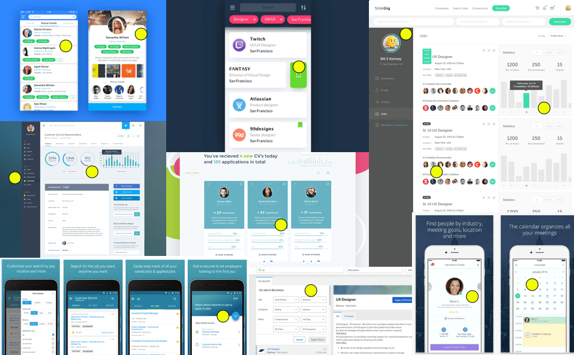
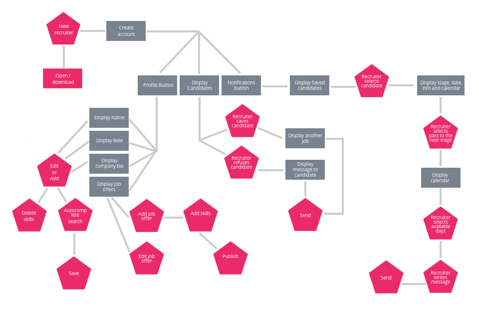
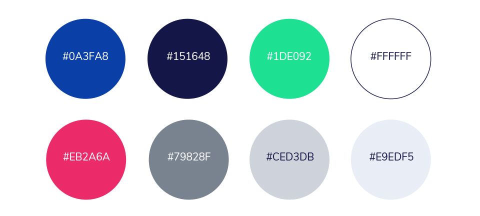
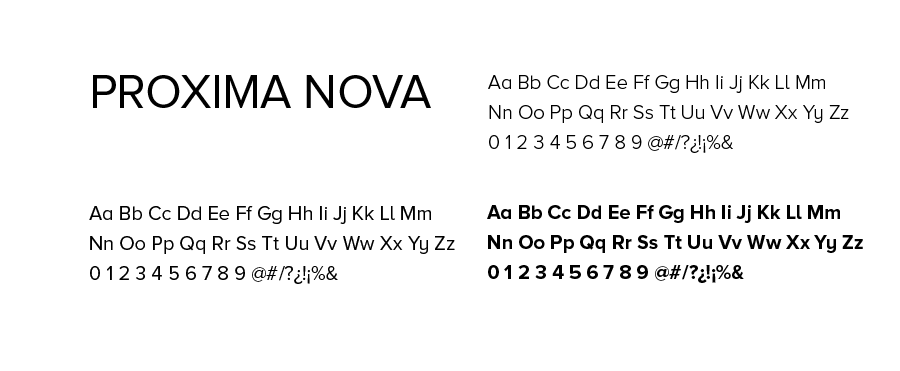
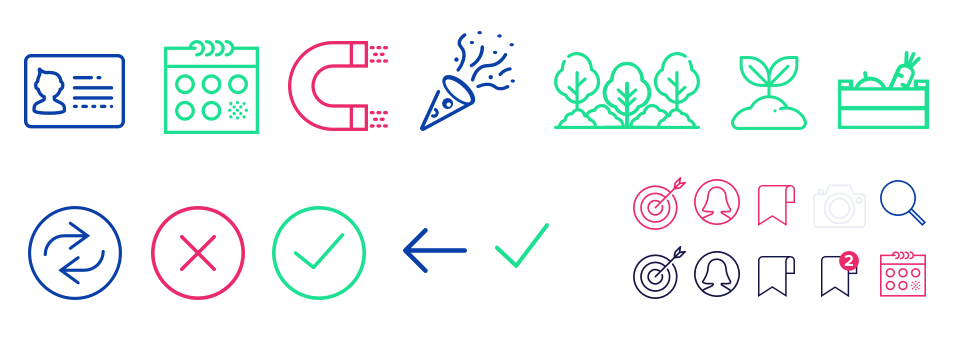
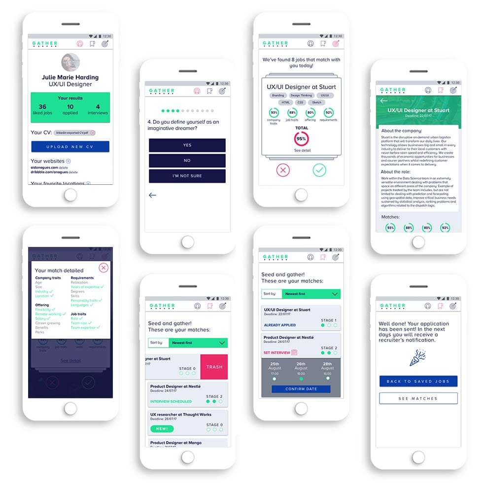
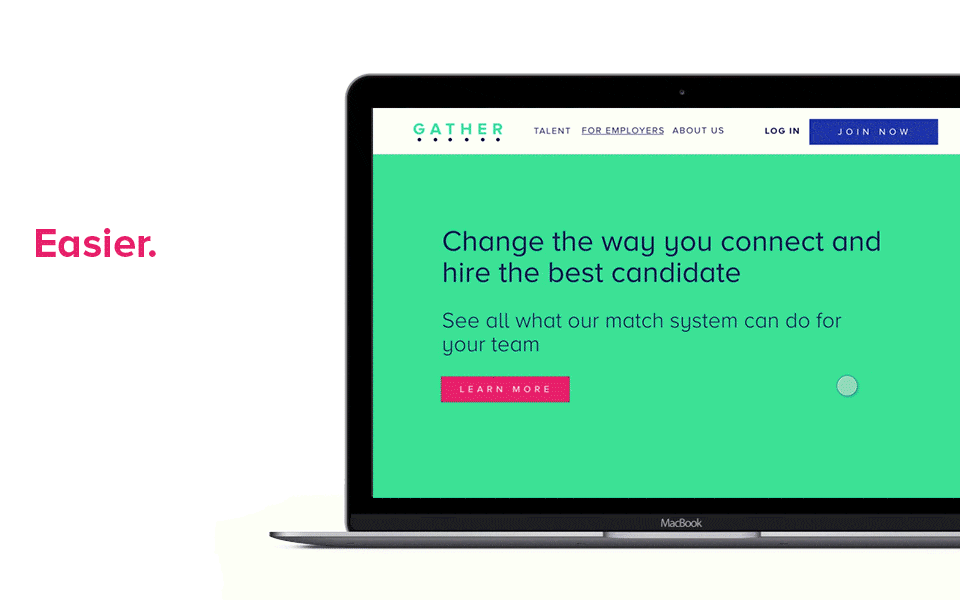
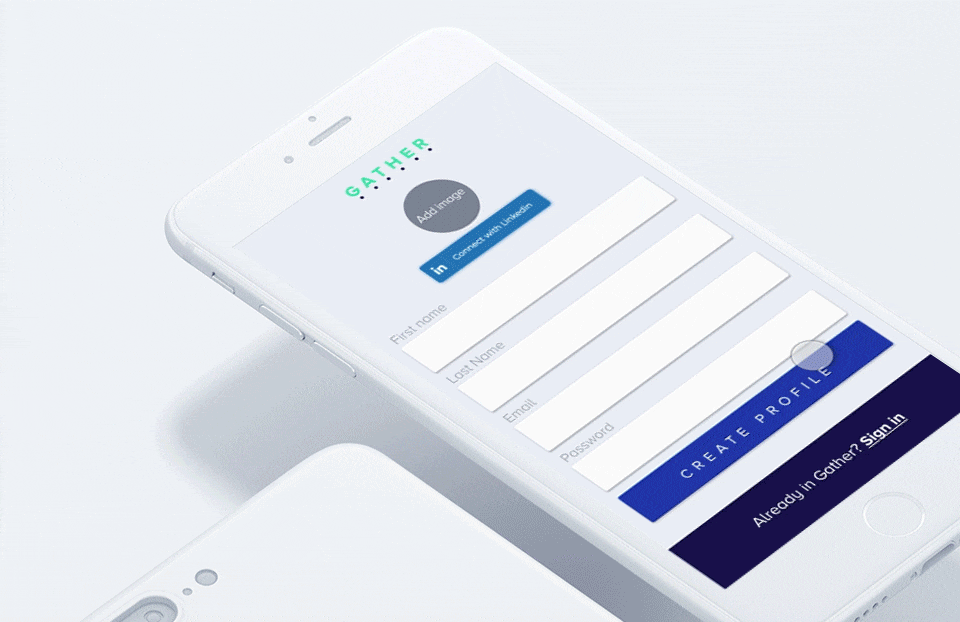

Gather
Gather is a job search engine made for developers and UX/UI designers. It allows to search and find a new job faster, easier and more effective by matching your professional experience, skills and personal traits with the perfect role in the perfect company.


User research & User insights
I made a lot of research by interviewing developers, designers and recruiters and iterating the applied results in my product. For developers and designers, the main problem was the hard work implied in searching for a new job (to fill the profile and experience in 5 platforms in average), and the impersonality and coldness of the process. They wanted to know more about companies and waste less time. Recruiters know how difficult is to find a good professional in these fields and want an accurate tool to find the perfect candidate.

User personas
After the interviews and surveys I ended with some information about my different types of users and their pain points and needs. Once all these information was processed I started building my user personas, that had been present to develop my first prototype.

Benchmarking
Another important research was through competitors and similar projects. I also took some inspiration of other services and apps that could help me to understand how to solve my users main problems.
Candidate Flowchart
With my user persona and my competitors study, I started developing a flowchart, or user flow. In fact, I needed two of them, to understand the interaction between candidate and recruiter and their different uses.

Recruiter Flowchart
Moodboards
The essence of this product is its clearness and efficiency. I also wanted to highlight a friendly feeling cause one of the main cores of the product is the closer treatment between recruiter and candidate. Fresh colors and drawings are present in all the app. Gather also refers to seed with effort and then gather the results to have the best job, so the app is full of signs related with field harvest.

Colors
The palette is vibrant and energetic, with colors that combine between them without problems. Green is the color of the fields but also of hope and peaceful attitude. Playful blue and pink highlight the important parts of the app and blue-greys help to reduce the huge impact of bright colors when necessary.
Typography
Proxima Nova has been chosen for its neutrality and readability. The product is oriented to designers too, so it must be appealing but not too relevant.
Icons
I selected line icons, simple but elegant, because icons are a great part of the app. They help not only to guide the user but to get rid of the boredom that normally we find in job lists.
Mobile UI Design
Based in the idea of clearness and effectiveness, the app is very visual and easy to use. It is made to perform in the phone, so I tried to get rid off of long scrolls and made it intuitive.
Desktop version
Recruiters work everyday searching for the perfect candidates. I thought of them doing a desktop version to work faster and more comfortable.
Interactions
Interactions are a main part of the app. All the cards have different functions (delete, set an interview, apply to a job) and I also took the idea to slide right or left from Tinder, to like or dislike the offer. Here I show you also the walkthrough of a user that is going to join in the app.

And the creation of the user profile to start using the app.
